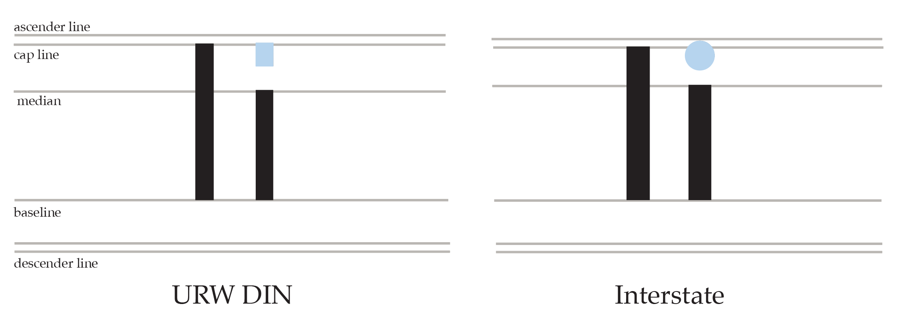
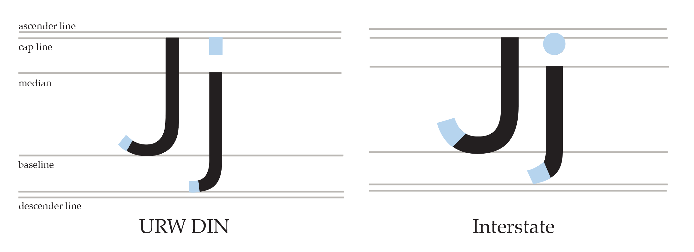
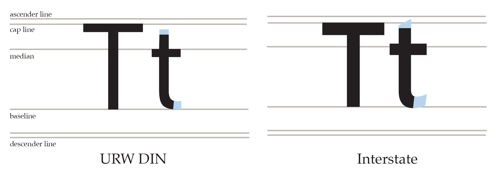
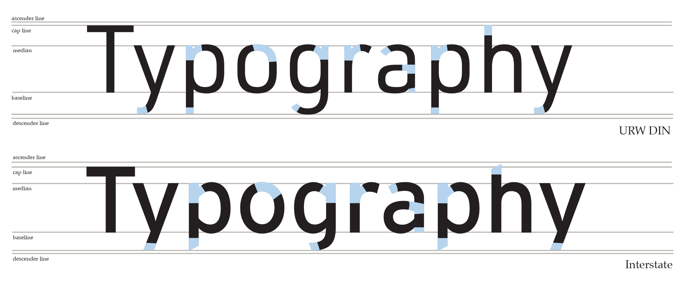
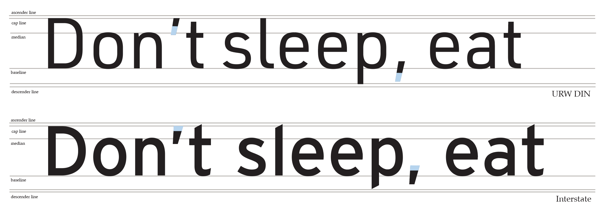
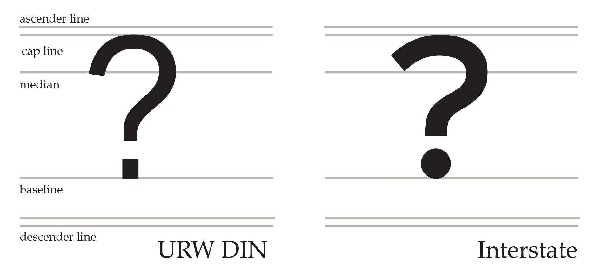
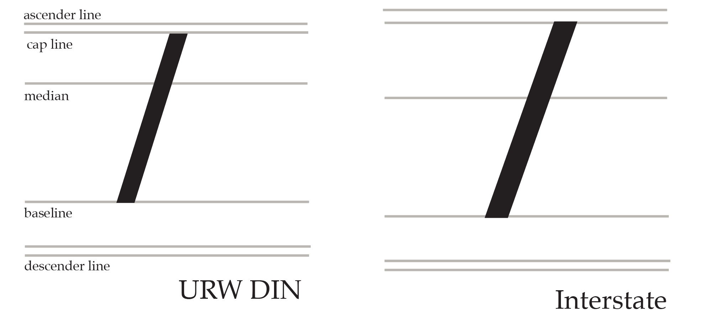

DIN, acronym for Deutsches Institut für Normung, stands for the German Institute for Standardization.
The DIN typeface was based on the master drawings of the Prussian railway in 1905. The earliest version of a DIN typeface was released in 1923 by D. Stempel AG foundry.
DIN 1451, developed in 1931 and adopted in 1936 in Germany, became the official standard for road and railway signage.
Interstate
Designer: Tobias Frere-Jones
Release date: 1993
Foundry: Font Bureau
Origin: United States
The typeface is closely related to the FHWA Series fonts, a signage alphabet drawn for the United States Federal Highway Administration in 1949.
Interstate is suitable for text setting in print and on-screen. It gained popularity as such in the 90s.
This typeface was meant to convey the aesthetic of the American road, and the excitement associated with the new interstate highway system of the Eisenhower era.
Comparison
Uppercase
Lowercase
Both URW DIN and Interstate are sans-serif fonts that fall under the category of Humanist. Their terminals end vertically, giving them a more open look to them. In general, Interstate has thicker lines making it look a little bolder when compared to URW DIN and more differences can be made out upon closer inspection of the fonts.
Style-specific letters
There aren't really any differences when it comes to DIN’s capital A and Interstate’s capital A but we can see some differences in their lowercase forms. DIN’s lowercase A bowl has more of a rectangular look to it where Interstate’s is a lot more curved and rounded. And DIN’s terminal also has more of a curved finish to it as well.DIN’s and Interstate G’s have the same look and feel to one another, but they share some differences between the two. DIN’s capital G has its terminal appears to be sitting higher in the counter where Interstate’s looks like it sits lower instead which is due to Interstates thicker use of its lines. On the lower case G, DIN has a loop that travels through the width of the G whereas Interstate’s loop finishes halfway through. DIN’s bowl also fits more smoothly into the stem more than Interstate does.

DIN’s and Interstate’s letter I are practically the same thing only that lowercase I have differing tittles. DIN’s lowercase I has a rectangular tittle and Interstate’s tittle is a rounded dot.

There's a big difference in the lowercase J of DIN and Interstate. We can see that Interstate’s font uses a rounded tittle for its J, whereas DIN’s uses a rectangular tittle instead. Interstate’s descender also ends in an angle while DIN’s descender is perpendicular.We can see another big difference between the fonts with the lowercase L. When it comes to Din, the lowercase L contains a spur the finishes of the letter. Interstate on the other hand has no spur at, instead it contains a diagonal terminal and nothing else.

The capital T for both fonts are practically the same, only difference being that Interstate uses thicker lines, making the T appear shorter. We see more differences on lowercase T where we see slight changes on the terminals. DIN’s terminals end perpendicular and Interstate ends at an angle.
Side-by-side comparison

Style-specific punctuation
When it comes to the punctuations of both fonts, they carry on a lot of the differences seen in previous letters.

DIN’s apostrophe is completely symmetrical, looking like a perfect rectangle whereas Interstate’s apostrophe is a trapezoid. Similarly to their apostrophes, the commas too share the same differences only that they are shifted to their sides to have that comma look. The periods of DIN are the same as their titles by having perfect squares and Interstate does this too with perfect round dots for theirs.Like the periods and tittles of DIN and Interstate, the stark differences between the exclamation points are due to DIN's perfect square dots and Interstate's round dots.

The question mark, in this case, displays similar differences as the exclamation point. The main difference it their dots, however, Interstate's question mark appears bolder, and its terminal does not curve in as much as DIN.

DIN and Interstate share a common backslash in terms of look but in terms of height, it is a little different. DIN’S backslash sits just under the baseline and extends to just under the ascent line. Interstate on the other hand has its backslash sitting a little more under the baseline and extends over the ascent line making it taller by comparison.
Numerals
As far as numerals go, DIN and Interstate seem to have quite the differences here compared to the difference they had on their letters. In general, DIN’s numerals are more narrow and elongated compared to the numerals seen on Interstates. Not only that, Interstate numerals have more curvature to their lines whereas DIN uses straight lines for their numerals. The biggest differences seen between the two fonts is with the numbers one and four. DIN’s ear on the number one comes together to the stem with a straight simple line while Interstate’s ear curves up to the stem giving a bump-like look to it. DIN’s four has an open counter, which is completely different from Interstate’s closed counter, giving them both a different feel.